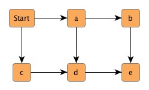
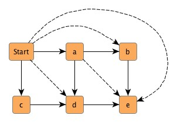

| Analyzing Graphs | ||
|---|---|---|
| Prev | Chapter 4. Working with the Graph Structure | Next |
One of the key aspects of the yFiles library is its emphasis on sophisticated algorithms for analyzing graph structures. Package y.algo provides a variety of services ranging from simple graph attribute queries to advanced graph characteristic computations. Table 4.3, “Services for analyzing graphs” gives an overview of the classes and their services.
In general, most of the services from package y.algo are offered by means of static methods, i.e., there is no need to create an instance of the respective specialized classes. Class Dfs, however, is an exception to this rule. It provides a framework to build customized depth-first search behavior, and has to be extended appropriately.
Table 4.3. Services for analyzing graphs
| Class Name | Description |
|---|---|
| Bfs | This class provides services that center around breadth-first search (BFS). |
| Bipartitions | Responsible for graph bipartition problems. |
| Centrality | Provides several so-called "centrality" measures to denote importance of graph elements within their graph. |
| Cycles | Responsible for finding cycles within a graph that have certain properties. |
| Dfs | Framework class for depth-first search (DFS) based algorithms. |
| GraphChecker | Provides methods that check structural properties of a given graph. |
| GraphConnectivity | Provides algorithms for determining certain connectivity components within a graph. |
| Groups | Provides support for automatic graph clustering. |
| NetworkFlows | Provides sophisticated algorithms for solving classical network flow problems like MinCostFlow or MaxFlow. |
| Paths | Responsible for finding paths within a graph that have certain properties. |
| RankAssignments | Provides algorithms for solving the rank assignment problem. |
| ShortestPaths | Provides diverse algorithms and helper methods for solving the Shortest Path problem on weighted graphs, i.e., graphs with a cost function on the edges. |
| SpanningTrees | Provides (minimum) spanning tree algorithms for graphs. |
| Transitivity | Provides algorithms to compute reachability information for directed, acyclic graphs: transitive closure, transitive reduction. |
| Trees | Provides diverse algorithms and services for tree-structured graphs or subgraphs. |
To conveniently check for the most common elementary graph characteristics
class GraphChecker offers a set of static
methods.
These cover for example whether a graph is cyclic/acyclic or contains multiple
components.
For the more advanced, in-depth questions there are specialized classes, like,
e.g., class Cycles
offers a set of static
methods.
These cover for example whether a graph is cyclic/acyclic or contains multiple
components.
For the more advanced, in-depth questions there are specialized classes, like,
e.g., class Cycles , or
GraphConnectivity
, or
GraphConnectivity .
(Class GraphChecker provides only "meta"-services, it asks in turn these
specialized classes.)
.
(Class GraphChecker provides only "meta"-services, it asks in turn these
specialized classes.)
Beginning at a starting node (which is thought of as having distance 0 to itself) breadth-first search visits all of its direct neighbors (these having distance 1) before it in turn uses these already visited nodes as new starting nodes to continue with their direct neighbors. That way, it visits all reachable nodes at distance k to the original starting node before those at distance k+1.
Look at the example graph in Figure 4.8, “Breadth-first search distances”. The numbers at the upper-right corners of the nodes denote the distance the respective node has to the starting node.
Class Bfs returns all nodes with equal
distance in a so-called "layer."
The methods it provides all allow for multiple start nodes which are called
"core" nodes.
By definition, all core nodes are returned in the first layer.
returns all nodes with equal
distance in a so-called "layer."
The methods it provides all allow for multiple start nodes which are called
"core" nodes.
By definition, all core nodes are returned in the first layer.
As an option, the BFS run can either be directed or undirected. By default, class Bfs ignores edge directions, i.e., it interprets the edges undirected.
Beginning at a starting node depth-first search (DFS) recursively visits the first yet undiscovered direct neighbor of every reached node before continuing in the same manner with the remaining neighbors at this node.
Look at the example graph in Figure 4.9, “Depth-first search graph traversal”. The numbers at the upper-right corners of the nodes denote the visiting sequence with directed DFS. Additionally, the emphasized edges show the path of the DFS run. Observe that the "Start" node is visited first and accordingly is assigned the first index (not shown).
Class Dfs is used as a framework to build
customized depth-first search services.
It offers a collection of callback methods for all important events during a
DFS run.
These callbacks are empty by default, and have to be extended appropriately by
an inheriting class.
Example 4.17, “Using class Dfs” demonstrates how to use the callback methods provided
by class Dfs.
is used as a framework to build
customized depth-first search services.
It offers a collection of callback methods for all important events during a
DFS run.
These callbacks are empty by default, and have to be extended appropriately by
an inheriting class.
Example 4.17, “Using class Dfs” demonstrates how to use the callback methods provided
by class Dfs.
Events during a DFS run are pre- and post-visit events with nodes and pre- and post-traversal events with edges. Another callback is provided to handle unconnected graphs when all nodes that are reachable from the starting node have been visited and there are still undiscovered nodes in the graph. Note that the invocation of this callback can optionally be disabled.
Class Dfs either ignores or respects edge directions, i.e., it interprets the graph structure either undirected or directed.
Example 4.17. Using class Dfs
// Extend class Dfs.
public class MyDFS extends Dfs {
// Print the so-called "DFS number."
// This number denotes when a node is visited.
public void preVisit(Node node, int dfsNumber) {
System.out.println("Node: " + node +
" has DFS number: " + dfsNumber);
}
// Print the so-called "completion number."
// This number denotes when a node has been completed.
public void postVisit(Node node, int dfsNumber, int compNumber) {
System.out.println("Node: " + node +
" has completion numbers: " + compNumber);
}
// The graph is unconnected, i.e., it has multiple components.
public void lookFurther(Node v) {
System.out.println("New starting node: " + v);
}
}
// Instantiate the customized class.
public void runDFS(Graph graph) {
MyDFS myDFS = new MyDFS();
// Set directed interpretation of the graph structure.
myDFS.setDirectedMode(true);
// Run the depth-first search algorithm on the given graph.
myDFS.start(graph);
}
To simply compute the DFS completion numbers for the node set of a graph there
are convenience methods provided in class
NodeOrders .
.
To answer the question which parts of a graph are reachable from a given node
by following the edges irrespective of their direction, class
GraphConnectivity is of good help.
It offers services to check if a graph is connected or even biconnected, it has
methods to find all connected/biconnected components of a graph, and methods to
insert additional edges into the graph thus making it connected/biconnected.
is of good help.
It offers services to check if a graph is connected or even biconnected, it has
methods to find all connected/biconnected components of a graph, and methods to
insert additional edges into the graph thus making it connected/biconnected.
Figure 4.10, “A graph with two components”, for instance, shows a graph with two connected components. In fact, the left one is even biconnected, i.e., removing any one of {a, b, c, d} leaves the remaining nodes still connected.
Example 4.18, “Making a graph connected” shows code to make a graph a connected compilation of biconnected components. Using the graph from Figure 4.10, “A graph with two components” as input would lead to Figure 4.11, “A connected graph” where the dotted edges represent the additionally inserted.
Example 4.18. Making a graph connected
// 'graph' is of type y.base.Graph.
// Check if the graph is connected.
if (!GraphConnectivity.isConnected(graph)) {
// Create a node map that will be used with class GraphPartitionManager.
NodeMap components = graph.createNodeMap();
// Get all connected components of the graph.
NodeList[] nl = GraphConnectivity.connectedComponents(graph);
for (int i = 0; i < nl.length; i++) {
// Create each component's marker object.
Integer id = new Integer(i);
// Fill the node map with the respective marker object of each component.
for (NodeCursor nc = nl[i].nodes(); nc.ok(); nc.next()) {
components.set(nc.node(), id);
}
}
// Create a PartitionManager to manage the components of the graph.
GraphPartitionManager gpm = new GraphPartitionManager(graph, components);
// Make the PartitionManager hide all connected components of the graph.
gpm.hideAll();
for (int i = 0; i < nl.length; i++) {
// Create each component's marker object.
Integer id = new Integer(i);
// Make the PartitionManager unhide all nodes and edges from a specific
// component.
gpm.unhidePartition(id);
// Check if this connected component from the graph is biconnected.
if (!GraphConnectivity.isBiconnected(graph)) {
// Make the connected component biconnected, i.e., add some edges.
EdgeList el = GraphConnectivity.makeBiconnected(graph);
}
// Make the PartitionManager hide the biconnected component.
gpm.hidePartition(id);
}
// Make the PartitionManager unhide all nodes and edges from the graph.
gpm.unhideAll();
// Make the entire graph connected.
EdgeList el2 = GraphConnectivity.makeConnected(graph);
// Release the resources previously allocated by the createNodeMap() method.
graph.disposeNodeMap(components);
}
Solving the problem of shortest paths is a commonly encountered question with graphs. Consider Figure 4.12, “Finding the shortest path”, for instance. The numbers at the edges denote "costs" that are associated with the traversal of an edge. To get from "Start" to "Destination" with minimum costs results in the path of emphasized edges. These edges define the shortest path between the two nodes with an accumulated cost of 8 [units].
Example 4.19, “Running single-source single-sink Shortest Path” shows the code to prepare and run a single-source single-sink Shortest Path algorithm on the graph depicted in Figure 4.12, “Finding the shortest path”.
Example 4.19. Running single-source single-sink Shortest Path
// 'graph' is of type y.base.Graph.
// Create an array the size of the edge set with costs for each edge.
double cost[] = {1, 3, 2, 3, 7, 1, 1, 4, 1, 1, 2, 2, 2, 3, 2, 2, 1};
// Create a data provider from the array.
// This data provider will be used as input to the Shortest Path algorithm.
DataProvider dp = (DataProvider)Maps.createIndexEdgeMap(cost);
// Create a node map to be filled by the algorithm.
NodeMap pred = graph.createNodeMap();
// Suppose the first node from the graph is the node named "Start."
Node startNode = graph.firstNode();
// Suppose the last node from the graph is the node named "Destination."
Node destinationNode = graph.lastNode();
// Run the single-source single-sink algorithm on the graph.
double result = ShortestPaths.singleSourceSingleSink(graph, startNode,
destinationNode, true, dp, pred);
// Release the resources previously allocated by the createNodeMap() method.
graph.disposeNodeMap(pred);
Figure 4.13, “Finding the shortest paths from a starting node” shows the shortest paths from "Start" to all other nodes from the graph. Beginning at the destination node of each of these paths, "Start" can be reached unambiguously by following the emphasized edges.
The class ShortestPaths offers a
multitude of methods using several well-known algorithms to solve shortest path
problems in most of its variants.
Paths can be computed between two nodes (single-source single-sink),
originating from one node (single-source), or between all pairs of nodes (all
pairs).
Included are:
offers a
multitude of methods using several well-known algorithms to solve shortest path
problems in most of its variants.
Paths can be computed between two nodes (single-source single-sink),
originating from one node (single-source), or between all pairs of nodes (all
pairs).
Included are:
In addition to customized costs on the edges, it is possible to compute shortest paths with uniform costs, too. There are several convenience methods defined to this end.
Note that many of the methods from ShortestPaths use maps and/or data providers to store either its result or to receive its parameters. Furthermore, all appropriate methods offer the option of interpreting the graph structure either directed or undirected.
Class ShortestPaths also has a set of convenience methods for result conversion, i.e., constructing a node or an edge path from either a given data provider or an array. Example 4.20, “Running single-source Shortest Path” demonstrates how to construct one specific path from the returned array after a single-source Shortest Path algorithm is run on the already prepared graph from Figure 4.12, “Finding the shortest path”.
Example 4.20. Running single-source Shortest Path
// Run the single-source Dijkstra algorithm on the graph.
ShortestPaths.dijkstra(graph, startNode, true, cost, new double[graph.N()],
pred);
// Suppose 'iNode' of type y.base.Node holds a reference to the node named "i."
// Construct the proper path from "Start" to "i" as a list of nodes.
NodeList nl = ShortestPaths.constructNodePath(startNode, iNode, pred);
For the elements of a graph the notion of importance of a single node or edge within the graph structure can be expressed using so-called "centrality" measures. A centrality measure is a function that yields a double value for each node or each edge. This value directly denotes the graph element's importance, i.e., the higher the value, the more important the element.
Class Centrality provides a variety of
such centrality measures for both node set and edge set.
Most of these measures also take edge costs into account.
Figure 4.14, “Node betweenness centrality” depicts a graph with node centrality values at
the upper-right corner of the nodes.
The numbers at the edges denote "costs" that are associated with an edge.
provides a variety of
such centrality measures for both node set and edge set.
Most of these measures also take edge costs into account.
Figure 4.14, “Node betweenness centrality” depicts a graph with node centrality values at
the upper-right corner of the nodes.
The numbers at the edges denote "costs" that are associated with an edge.
The methods from class Centrality optionally either ignore or respect edge direction when computing centrality indices. Also, the class offers convenience methods to normalize all values computed for either node set or edge set to lie in the interval [0..1].
Example 4.21, “Computing centrality indices for nodes” shows the code to prepare and run the node betweenness centrality algorithm on the graph depicted in Figure 4.14, “Node betweenness centrality” ignoring edge directions. Subsequent to the computation, the resulting double values are also normalized.
Example 4.21. Computing centrality indices for nodes
// 'graph' is of type y.base.Graph.
// Create an array with the costs for each edge.
double[] cost = {1, 3, 2, 3, 7, 1, 1, 4, 1, 1, 2, 2, 2, 3, 2, 2, 1};
// Create the data provider to be used as parameter from this array.
DataProvider dp = (DataProvider)Maps.createIndexEdgeMap(cost);
// Create the node map to hold the centrality indices for all nodes.
NodeMap myCentrality = graph.createNodeMap();
// Compute node betweenness centrality.
Centrality.nodeBetweenness(graph, myCentrality, false, dp);
// Normalize the double values so that they lie in the interval [0..1].
Centrality.normalize(graph, myCentrality);
A spanning tree of a connected graph is the smallest set of edges such that all
nodes of the graph are connected.
Finding these and also finding the minimum spanning tree
of a graph is the duty of class
SpanningTrees .
.
Consider Figure 4.15, “Finding the minimum spanning tree”, for instance. The numbers at the edges denote "costs" that are associated with an edge. The smallest set of edges such that all nodes from the graph are connected and the accumulated costs of the set is at a minimum results in the emphasized edges. These edges define the minimum spanning tree of the graph with an overall cost of 17 [units].
Class SpanningTrees provides different algorithms to find a minimum spanning tree of a given graph. Furthermore, it also offers convenience methods to get the overall costs of a spanning tree, and to compute a spanning tree with uniform costs at the edges.
Example 4.22, “Running the Spanning Tree algorithm” shows the code to prepare and run a Spanning Tree algorithm on the graph depicted in Figure 4.15, “Finding the minimum spanning tree”.
Example 4.22. Running the Spanning Tree algorithm
// 'graph' is of type y.base.Graph.
// Create an array with the costs for each edge.
double[] cost = {1, 3, 2, 3, 7, 1, 1, 4, 1, 1, 2, 2, 2, 3, 2, 2, 1};
// Create the data provider to be used as parameter from this array.
DataProvider dp = (DataProvider)Maps.createIndexEdgeMap(cost);
// Compute the minimum spanning tree of the graph.
EdgeList el = SpanningTrees.kruskal(graph, dp);
// Get the overall costs of the minimum spanning tree.
double treeCosts = SpanningTrees.cost(el, dp);
Class Transitivity offers sophisticated
computational services relating to reachability questions in directed acyclic
graphs.
The two operations provided are transitive closure and transitive reduction.
offers sophisticated
computational services relating to reachability questions in directed acyclic
graphs.
The two operations provided are transitive closure and transitive reduction.
Transitive closure means the augmentation of a graph's edge set such that an existing path between any two nodes, which are not direct neighbors to each other, leads to an additional edge connecting these nodes. In effect, this means that any two nodes that are reachable by a path of arbitrary length before the augmentation, are instantly reachable thereafter, i.e., they are direct neighbors.
In Figure 4.16, “Transitive closure of a graph” a simple graph together with its transitive closure is depicted. The additionally inserted edges are dotted. For example, the dotted edge between "Start" and "e" has been inserted to reflect even multiple possible paths from "Start" to "e": [a, b, e], [a, d, e], or [c, d, e] are all existing paths.
Note that class Transitivity computes only the transitive, but not the reflexive, transitive closure. However, the latter one can easily be achieved by adding self-loops to each node.
Figure 4.16. Transitive closure of a graph
|

|

|
|
| (a) Example graph... | (b) ... and its transitive closure. |
Transitive reduction is the reverse operation to transitive closure. It means the removal of all directly connecting edges from a graph as long as there remains another path of at least two edges length between the two considered nodes. Figure 4.17, “Transitive reduction of a graph” shows a simple graph and its transitive reduction.
Class Trees provides a variety of
services centering around tree structures.
It offers methods to modify existing trees and methods to check if a graph
fulfills certain tree characteristics.
Moreover, it has methods to "extract" tree structures contained in arbitrary
graphs.
Note that there is a division in the methods of class Trees.
On the one hand there are methods to deal with general graphs, and on the other
hand there are methods that expect the given parameter of type Graph to be a
proper tree.
provides a variety of
services centering around tree structures.
It offers methods to modify existing trees and methods to check if a graph
fulfills certain tree characteristics.
Moreover, it has methods to "extract" tree structures contained in arbitrary
graphs.
Note that there is a division in the methods of class Trees.
On the one hand there are methods to deal with general graphs, and on the other
hand there are methods that expect the given parameter of type Graph to be a
proper tree.
To properly use the methods from class Trees, it is necessary to understand the notion of a rooted tree and what directed tree means. Directed means that all edges uniformly point towards the leaf nodes. A rooted tree, as it is usually defined, meets the following conditions:
A reversed rooted tree means that all edges point towards the root node, instead of the leaf nodes. In particular, this means that the root node has only incoming, but no outgoing edges.
Querying the tree depicted in Figure 4.18, “A simple tree” for its root node, e.g., would lead to node "ROOT", and the list of all leaf nodes would be {a, f, i, j, k}.
// 'graph' is of type y.base.Graph.
// Test if the graph is a tree.
if (Trees.isTree(graph)) {
// Explicitly set the first node from the node set as the root node of the
// tree.
// Direct the tree; i.e., revert those edges that point towards the root
// node.
EdgeList el = Trees.directTree(graph, graph.firstNode());
// Get the leaf nodes of the tree.
NodeList nl = Trees.getLeafNodes(graph, true);
}
Finding the common ancestor of nodes from a tree is another query supported by class Trees. For instance, the common ancestor of nodes {f, j, k} from Figure 4.18, “A simple tree” would be node "c."
Example 4.23. Finding the common ancestor of a set of nodes
// 'graph' is of type y.base.Graph. // Get the root node of the tree. Node root = Trees.getRoot(graph); // Get the leaf nodes of the tree. NodeList nl = Trees.getLeafNodes(graph, true); // Remove the first and last leaf node from the list. nl.pop(); nl.popLast(); // Find the nearest common ancestor for all remaining leaves. Node ancestor = Trees.getNearestCommonAncestor(graph, root, true, nl);
The following topics have been discussed in this chapter:
|
Copyright ©2004-2015, yWorks GmbH. All rights reserved. |